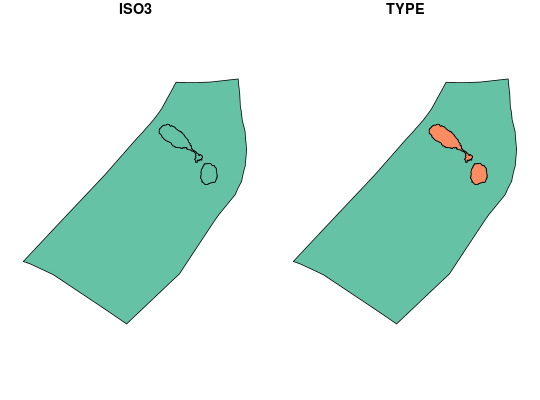

Fetch and assemble land and exclusive economic zone (EEZ) data for the world's nations.
land_and_eez_fetch(x, crs = 3395, tolerance = 1, download_dir = rappdirs::user_data_dir("wdpar"), force_download = FALSE, threads = 1, verbose = FALSE)
| x |
|
|---|---|
| crs |
|
| tolerance |
|
| download_dir |
|
| force_download |
|
| threads |
|
| verbose |
|
sf spatial data object. This object contains the
following two fields: "ISO3" which shows the country associated
with each geometry, "TYPE" which indicates if a geometry corresponds
to the country's terrestrial land mass ("LAND") or its
exclusive economic zone ("EEZ").
Data are assembled using the following steps.
Spatial data showing the spatial extent of each country's terrestrial administrative area is downloaded (from the Database of Global Administrative Areas; http://www.gadm.org/). Note that the global data set is approximately 800 MB in size.
Spatial data showing the spatial extent of each country's exclusive economic zone are downloaded (from http://marineregions.org; approx. 113 MB in size; Claus at al. 2017)). Note that the global data set is approximately 200 MB in size.
Both data sets are scanned for invalid geometries, and invalid
geometries are fixed (using st_parallel_make_valid).
Both data sets are reprojected to argument to crs.
Scan both data sets again for invalid geometries, and fix any
invalid geometries that have manifested (using
st_parallel_make_valid).
Snap geometries to a grid to fix any unresolved geometry issues
(using link[lwgeom]{st_snap_to_grid}).
A field denoting the country code is created in the two data sets
is created ("ISO3").
Both data sets are dissolved by the country code field ("ISO3")
to remove overlapping geometries.
Scan both data sets again for invalid geometries, and fix any
invalid geometries that have manifested (using
st_parallel_make_valid).
Areas in the exclusive economic zone datset that overlap with the
terrestrial data set are removed (using st_difference).
The terrestrial data is assigned a new field "TYPE" containing
"LAND".
The exclusive economic zone data is assigned a new field
"TYPE" containing "EEZ".
The terrestrial and exclusive economic zone datsets are merged
(using rbind).
The merged data set is sorted by country code ("ISO3") and
("TYPE"; using filter.sf).
Claus S, De Hauwere N, Vanhoorne B, Souza Dias F, Oset Garc\'ia P, Hernandez F & Mees J (2017) MarineRegions.org. Flanders Marine Institute. Available at http://www.marineregions.org.
# fetch land and eez data for Saint Kitts and Nevis kna_data <- land_and_eez_fetch("KNA")#> [1] 1 #> Time difference of 0.09309244 secs #> [1] 2 #> Time difference of 0.005711794 secs #> [1] 3 #> Time difference of 0.03362203 secs #> [1] 4 #> Time difference of 0.1062851 secs #> [1] 5 #> Time difference of 0.002733707 secs #> [1] 6 #> Time difference of 0.05054426 secs #> [1] 7 #> Time difference of 0.0378747 secs #> [1] 8 #> Time difference of 0.02742577 secs #> [1] 9 #> Time difference of 0.0001652241 secs #> [1] 10 #> Time difference of 0.07853794 secs #> [1] 11 #> Time difference of 0.0004425049 secs #> [1] 12 #> Time difference of 0.004497051 secs #> [1] 13 #> Time difference of 0.00198698 secs #> [1] 14# plot data plot(kna_data)not_run({ # fetch land and eez data for the planet global_data <- land_and_eez_fetch("global") })